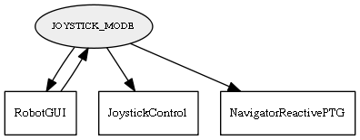

Global overview
All modules
All variables
All commands
Mission files
Pipelines
Variable: JOYSTICK_MODE
Variable info:
Variable name
Short description
Who publishes it?
Who subscribes to it?
JOYSTICK_MODE
A string either "0" or "1" to enable manual control with a Joystick
RobotGUI
JoystickControl
NavigatorReactivePTG
RobotGUI
Variable graph:

Detailed description:
A string either "0" or "1" to enable manual control with a Joystick
Page generated by
Mooxygen 1.1.0
at Thu Jan 22 11:30:21 2015